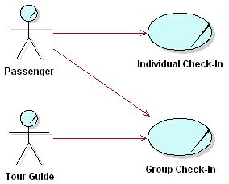

| Рекомендация: Business Use Case |
 |
|
| Связанные элементы |
|---|
ExplanationThe processes of a business are defined as a number of different business use cases, each of which represents a specific workflow in the business. A business use case defines what should happen in the business when it is performed; it describes the performance of a sequence of actions that produces a valuable result to a particular business actor. A business process either generates value for the business or mitigates costs to the business.  A passenger can either travel individually or with a group. When traveling with a group, a passenger is accompanied by a tour guide. A business use case describes "a sequence of actions performed in a business that produces a result of observable value to an individual actor of the business". Hence, from an individual actor's perspective, a business use case defines the complete workflow that produces the desired results. This is similar to what is generally called a "business process", but "a business use case" has a much more precise definition. The definition of the business use case concept contains a number of keywords, which are essential to understanding what a business use case is:
Business use cases specify the interactions between the subject business and its (external) business actors, and the effect that they have on the business - the performance of a business use case may change the state of the business (and thus may change the way the business responds to future events or interactions), and the business use case must specify these state changes. What the business directly and explicitly provides to its environment are services (the business from this perspective is simply the top level Business System and should therefore encapsulate its resources and provide well-defined services to its environment - see Guideline: Business System), and the interaction between the Business Actor and the business, as described in the Business Use Case, will take place through the invocation of one or more of those services. Note that for new business development (business creation, for example), or when changing the business, Business Use Cases are one way of identifying services that the business must support. The collected set of business use cases constitute all the possible ways of using the business. See also Guideline: Business Use-Case Model. Business Use Cases vs. Business Use-Case RealizationsIn a use-case driven business modeling project, you develop two views of the business. The business use case itself presents an external view of the business, which defines what is essential to perform for the business to deliver the desired results to the actor. It also defines what interaction (the business actor-business input-response sequence) the business should have with the actors when the business use case is executed. Such a view must be developed when you are deciding and agreeing on what should be done in each business use case. A collection of business use cases gives an overview of the business that is very useful for informing employees of what different parts of the business are doing, and what results are expected. A business use case description does this without reference to the actual internal structure of the business. Note that the business use case should also describe any state changes in the business that occur when it is executed, as well as any significant business events raised or received. The business use case does not prescribe how business state is to be established and maintained internally, or how business events are to be communicated internally - but it does specify what the state changes are and what the significant business events are, to be able to present a complete view of required business behavior. A business use-case realization, on the other hand, gives an internal view of the business use case, which defines how the work should be organized and performed in order to achieve the same desired results. A realization encompasses the business workers and business entities that are involved in the execution of a business use case and the relationships between them that are required to do the job. Such views must be developed to decide and agree on how the work in each business use case must be organized to achieve the desired results. The Business Designer ensures that there are consistent mappings between the specification (the what), in the business use case, and the realization (the how), in the business use-case realization, for the business state changes and business events, to achieve the desired behavior across all business use cases. Both views of the business use case are primarily intended for people within the business - the external view for people who work outside the business use case, the internal view for people who work inside the business use case. Classes and Instances of Business Use CasesAs a business operates, you will find that you can identify an almost unlimited number of separate workflows. A use-case instance is simply a specific workflow, or scenario. It corresponds to the work that a number of collaborating business members perform in their roles defined in the object model, and not to any particular business member or any role that the member is playing. A business use case is what you normally work with to make the use-case model understandable, and to avoid drowning in details. It represents the union of a number of business use-case instances with workflows that are similar, but normally not identical. Typically, an employee who is competent to act in a certain role will do this in instances of several different business use cases. Example:At the airport check-in counter, the two business use cases, Individual Check-in and Group Check-in both require the same competencies from the employee at the check-in counter, as well as access to the same information about a certain departure. Thus, both use cases can and should be designed using the same Check-in Agent business worker and Departure entity. Extent of a Business Use CaseIt is sometimes hard to decide if a service is one, or several business use cases. Apply the definition of a business use case to the airport check-in process. A passenger hands his ticket and baggage to the check-in agent, who finds a seat for the passenger, prints a boarding pass and starts baggage-handling. If the passenger has normal baggage, the check-in agent prints baggage tag and customer claim check, and terminates the business use case by applying the tag to the baggage, and giving the customer claim check, together with the boarding pass, to the passenger. If the baggage has a special shape or special contents so that it cannot be transported normally, the passenger must take it to a special baggage counter. If the baggage is heavy, the passenger must continue on to the airport ticket office to pay for it, because check-in agents do not handle money. Do you need one business use case at the check-in counter, another at the special baggage counter and a third at the ticket office? Or do you need just a single business use case? Surely, this transaction involves three different types of actions. But the question is, will any of them be of value to a passenger carrying special baggage if he does not do the others? No, it is only the complete procedure-from the moment the passenger approaches the check-in counter until he has paid the extra charge-that has value (and that makes sense to the passenger). Thus, the complete procedure involving the three different counters is a complete case of usage-a business use case. In addition to this criteria, it is practical to keep descriptions of closely related services together, so that you can review them at the same time, modify them together, test them together, write manuals for them, and in general manage them as a unit. Notice also that two independent business use cases can have similar beginnings. Example:In an insurance company, the business use cases Handle Claim and Handle Request both start when someone (an actor) makes contact with a claim handler. The claim handler and the actor exchange some information to make it clear whether the actor is filing a claim or requesting some information. Then, and only then, is it possible to decide which business use case is performing. Although the two business use cases have similar beginnings, they are not connected. NameThe name of the business use case should express what happens when an instance of the business use case is performed. The form of the name should therefore be active, typically described by the gerund form of the verb (Checking-in) or a verb and a noun together. The names can either describe the tasks in the business use case from an external or an internal viewpoint, for instance placing an order or receiving an order. Although a business use case describes what happens within the business, it is often most natural to name the business use case from its primary actor's point of view. Once you have made a decision which style is to prefer in your case, you should follow the same rule for all business use cases in the business model. GoalsThe goal of a business use case should be specified from at least two perspectives:
Performance GoalsSome common metrics categories are:
A major challenge is to understand what scenarios (business use-case instances) are relevant to measure. Criteria to use are frequency of the scenario, or business relevance of the scenario. If you can determine that a particular part of the workflow has importance, you may save yourself some effort by only measuring the cost or time of that subflow. Workflow - StructureMost workflows may be thought of as several subflows, which together yield the total flow. Sometimes several business use cases in the business have a common subflow, or the same subflow appears in different parts of one business use case. If this common behavior has any substantial volume, it should be performed by the same business workers. If a subflow is substantial, common to several business use cases, and also forms an independent and naturally delimited part, the model might be clearer if this behavior is partitioned out to a separate business use case. This new business use case is then either included in the original use case (see Guideline: Include-Relationship in the Business Use-Case Model), an extension to it (see Guideline: Extend-Relationship in the Business Use-Case Model), or a parent use case to it (see Guideline: Use-Case-Generalization in the Business Use-Case Model). Example:At the airport check-in counter, the two business use cases, Individual Check-in and Group Check-in both use the same procedure to handle an individual passenger's baggage. Because the subflow is independent of the ticket handling, and is logically connected, it is modeled separately in the business use case, Baggage Handling. The workflow of a business use case can be visualized using activity diagrams, see Guideline: Activity Diagram in the Business Use-Case Model. For more information on structuring and describing the workflow of a business use case, see Guideline: Use Case, the discussions on Flow of Events. Workflow - ExampleFollowing is a description of the workflow of the business use case Proposal Process in an organization that sells solutions configured to each individual customer. In Technique: Activity Diagrams in the Business Use-Case Model, the section on Examples of Use, you find an example of an activity diagram visualizing the structure of this workflow: 1. Basic Workflow 1.1. Initial Contact This process starts with an initial contact between the Customer and The Company. This may happen in one of the following ways:
The Company interacts with the Customer to establish:
1.2. Initial Opportunity Work There are two main purposes of this section:
The steps, Gather Preliminary customer requirements, Create sales plan (optional), and Perform Opportunity Analysis can be performed in an iterative manner, and may be performed somewhat in parallel. 1.2.1 Gather Preliminary Customer Requirements Gather both product requirements and customer business requirements by doing the following:
A complete set of requirements would include:
1.2.2 Create Sales Plan (optional)
The Company works with the Customer to determine how it is going to propose a solution meeting the customer
requirements. This creation is called a sales plan, and includes the network and switch characteristics for the
potential solution. The strategic positioning of The Company and its network is also discussed so that we can prepare
for future needs. 1.2.3 Perform Opportunity Analysis
The Company will obtain the high-level price and cost of the potential solution. This is done in order to understand
the potential value of this opportunity, not to provide an accurate dollar amount to a Customer.
Based on this evaluation, The Company makes a decision whether or not to continue the opportunity. 1.3. Create Proposal Project Plan The Company will create a plan for creating and offering the proposal. The plan will include the assignments to the individuals completing the parts of the proposal. 1.4. Create Delivery Project Plan The Company develops a tentative project plan for delivery of the solution based on:
This project plan will be used for future factory planning. 1.5. Prepare a Quote
This flow is defined in detail in the business use case Quote Process, which is included. 1.6. Compile Additional Information The Company compiles information to respond to any inquiries (usually regarding future development of products) that might be a part of the customer business requirements. This may also include information The Company thinks the Customer should know. The inquiries are generally of the following types:
1.7. Analyze and Finalize the Proposal The Company compiles a proposal that includes the following items:
1.8. Present the Proposal The Company presents/proposes the above information to the Customer. 1.9. Obtain Customer Decision
The Customer will give feedback on the proposal. The Company obtains an agreement from the Customer on quotes within
the proposal. Such an agreement may have different format depending on the character of the solution and who the
Customer is.
2. Alternative Workflows 2.1. Business Opportunity Rejected If in 1.2., it turns out the business opportunity is rejected, the following actions may be taken:
2.2. Unable to Meet Customer Requirements If in Perform Opportunity Analysis or Prepare a quote, The Company is unable to suggest a solution to the customer requirements, then the following actions may happen:
2.3. Critical Information Not Known If at any point in the Proposal Process The Company identifies some critical information not known or available then he does one of the following:
If any assumptions are made, then they are logged and given to the Customer in an attached document in the proposal. 2.4. New/Incomplete or Incorrect General Customer Profile If The Company determines that the general customer profile is inaccurate for some reason, the following actions may be taken.
PossibilitiesThe possibilities of a business use case should reflect the improvement potential you can see for the business use case, where in the process, as well as scale. Refer to the metrics you have specified for the business use case. Extension PointsAn extension point opens up the business use case to the possibility of an extension. It has a name, and a list of references to one or more locations within the workflow of the business use case. See also Guideline: Extend-Relationship in the Business Use-Case Model. Characteristics of a Good Business Use Case
*This may seem counter to the UML definition of use case, but see Guideline: Business Use-Case Model, section describing 'Internal Business Use Case', for clarification. Characteristics of a Good Workflow Description
Characteristics of a Good Abstract Business Use Case
|
© Copyright IBM Corp. 1987, 2006. Все права защищены.. |